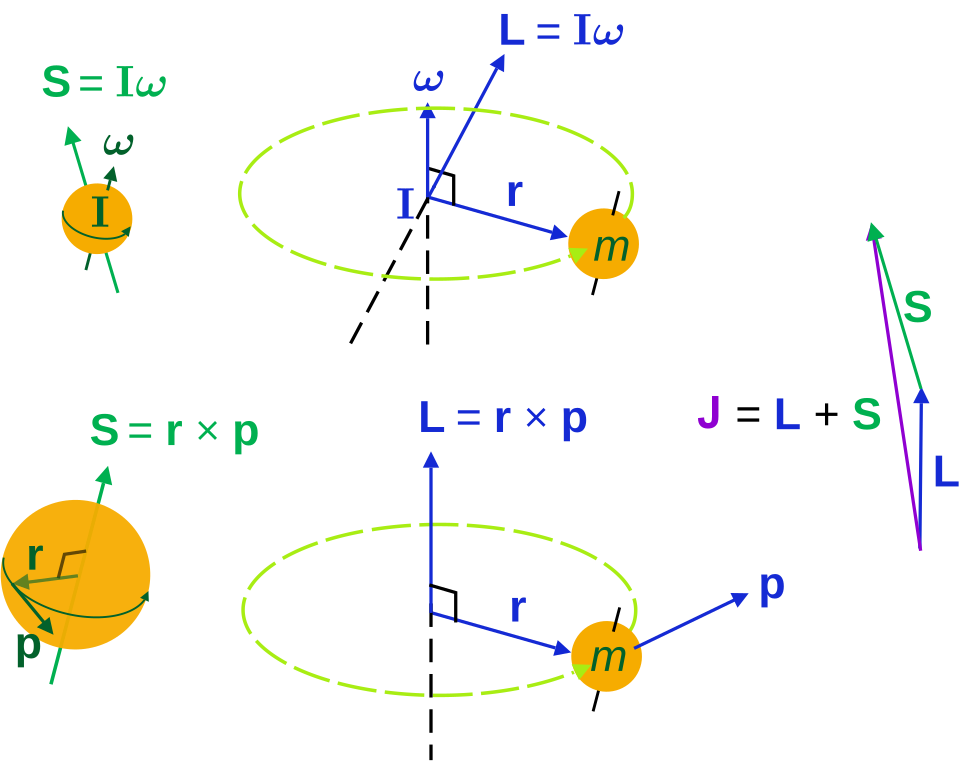

Açısal Momentum

Açısal momentum, herhangi bir cismin dönüş hareketine devam etme isteğinin bir göstergesidir ve bu nicelik cismin kütlesine, şekline ve hızına bağlıdır. Açısal momentum bir vektör birimidir ve cismin belirli eksenler üzerinde sahip olduğu dönüş eylemsizliği ile dönüş hızını ifade eder.Bir sistemin sahip olduğu açısal momentum, içerisindeki bireysel ufak parçacıkların sahip olduğu açısal momentumların toplamına eşittir. Simetri ekseni üzerinde dönüş yapan bir cismin açısal momentumu eylemsizliğinin (cismin yerinin değiştirilmesine ile açısal hızına ω müdahale edilmesine karşı yaratmış olduğu direnç) ürünü olarak hesaplanabilir. Formülü Bu nedenle açısal momentum bazen "dönüş lineer momentumu" olarak ifade edilir.
Açısal Momentum
L = I × ω
L = m × r2 × ω
Tork
τ = I × α
τ = m × r2 × α